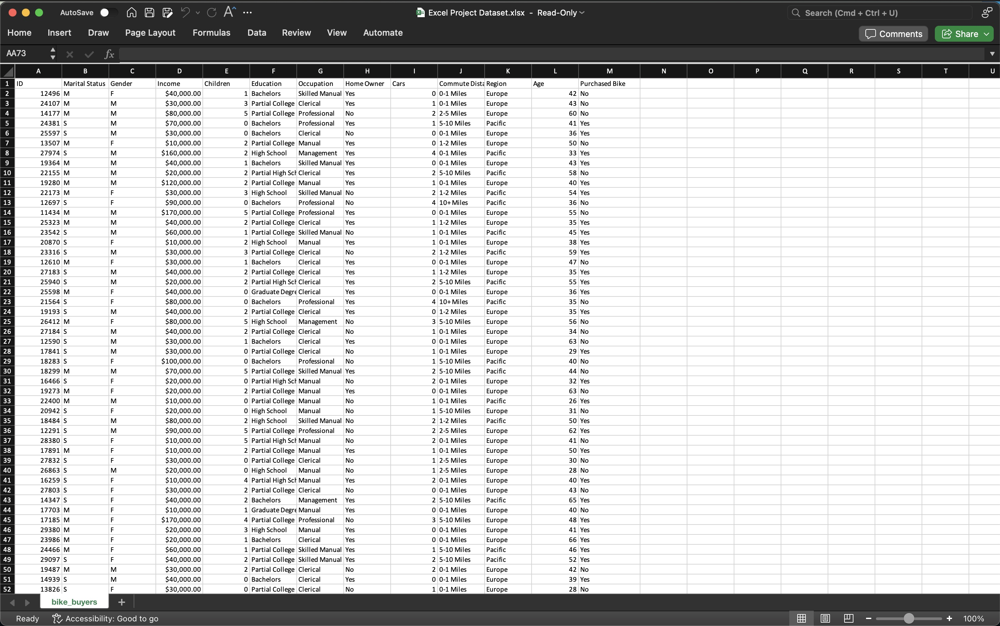
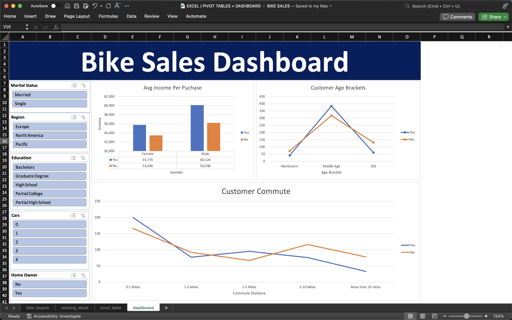

PIVOT TABLES + DASHBOARDS -
Bike Sales Data
Data Set: Press Here
GitHub File: Press Here
Overview:
This project focuses on cleaning and preparing a dataset of bike sales in Excel. The goal is to structure and visualise the data through a dashboard that highlights key insights, such as how various factors like gender, age brackets, and commute distance impact the likelihood of a customer purchasing a bike. The project demonstrates data cleaning, data manipulation, and dashboard creation skills using Excel.
Key Skills Used:
• Data Cleaning: Removing duplicates, text formatting, grouping data into categories
• Data Analysis: Using formulas like IF, building pivot tables
• Data Visualisation: Creating bar charts, line charts, and slicers, developing an interactive dashboard
Dataset Description:
The dataset consists of bike sales data with fields like customer info (age, marital status, gender), sales data (purchase status, income), and demographics (education level, region). It contains inconsistencies like text formatting issues and missing values, which are addressed in this project.
Why This Project is Worth Doing:
• This project offers practical experience in cleaning and analysing retail data using Excel.
• It provides insights into customer behaviour and allows for actionable insights on bike sales.
• The project highlights dashboard creation, essential for visualising and presenting key business insights.
Step-by-Step Guide for Data Cleaning:
- Copy Data Sheet: Right-click on the active sheet → Click Move or Copy → Click OK.
- Remove Duplicates: Go to Data tab → Select dataset → Click Remove Duplicates → Confirm columns to check for duplicates → Click OK.
- Standardise Text Formatting: Insert new columns for text fields → Use IF statements to standardise gender and marital status (e.g., M/F to Male/Female).
- Condense Age into Brackets: Add a new column for age brackets using IF statements (e.g., <31 = Adolescent, 31-54 = Middle Age, >54 = Old).
- Build Pivot Tables: Insert Pivot Tables to analyse data like average income by gender and purchase status. Create charts for visualisation.
- Create Visualisations: Add bar charts, and line charts for income, commuting distance, and age brackets.
- Develop the Dashboard: Copy charts onto a new sheet, hide gridlines and create a heading. Align charts for better presentation.
- Add Slicers: Insert slicers for fields like marital status, gender, region, and education. Connect slicers to all charts.
- Final Touches: Arrange the dashboard neatly, apply colour coordination, and save the final file.
Initial Dataset:  Final Dashboard: 
CONCLUDING REMARKSThis project provided me with invaluable experience in using Excel not only for data cleaning and analysis but also for visualising and presenting key business insights through an interactive dashboard. By working through the steps of cleaning data and transforming it into meaningful, actionable insights, I developed a deeper appreciation for the importance of data organisation and visual storytelling in decision-making processes. The project also allowed me to strengthen my skills in building pivot tables, formulating logic-based functions and creating an intuitive dashboard for non-technical stakeholders. Overall, it reinforced my understanding of how data analytics can drive business strategies and highlighted the value of clear, well-structured data when communicating complex findings using Excel.